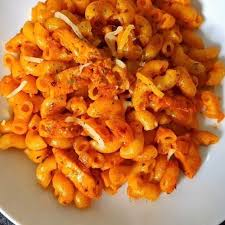

Home
Macaroni

Description
Macaroni is a simple and comforting dish that can be made with a rich, creamy sauce. To make macaroni, start by cooking the pasta in salted boiling water until it's al dente. In a separate pan, prepare the cheese sauce by melting butter and whisking in flour to make a roux.
Slowly add milk while whisking to create a smooth sauce, then stir in shredded cheese until melted and creamy. Once the macaroni is cooked, drain it and combine it with the cheese sauce. Season with salt and pepper, and garnish with parsley or extra cheese if desired. Serve hot and enjoy this classic dish!
Ingredients
- Macaroni Pasta
- Butter
- Flour
- Milk
- Cheese
- Salt and Pepper
- Parsley
Steps
- Bring a large pot of salted water to a boil. Add the macaroni and cook until al dente (about 8-10 minutes). Drain the pasta and set it aside.
- In a separate pan, melt butter over medium heat. Add flour and whisk continuously for 1-2 minutes to create a roux.
- Slowly pour in the milk while whisking, ensuring there are no lumps. Let the mixture simmer for 2-3 minutes until it thickens.
- Stir in the shredded cheese and continue stirring until the cheese is fully melted and the sauce is creamy. Season with salt and pepper.
- Add the cooked macaroni to the cheese sauce and mix until all the pasta is coated evenly.
- Garnish with fresh parsley or extra cheese if desired. Serve hot and enjoy your cheesy macaroni!